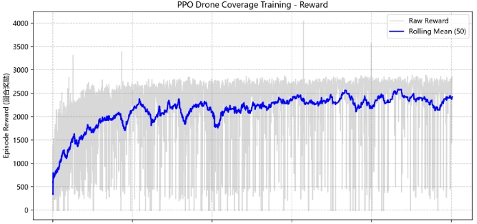
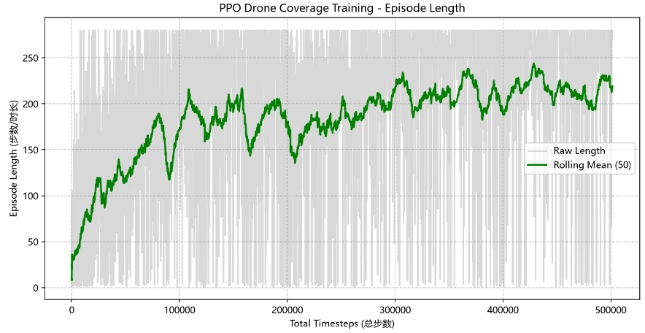
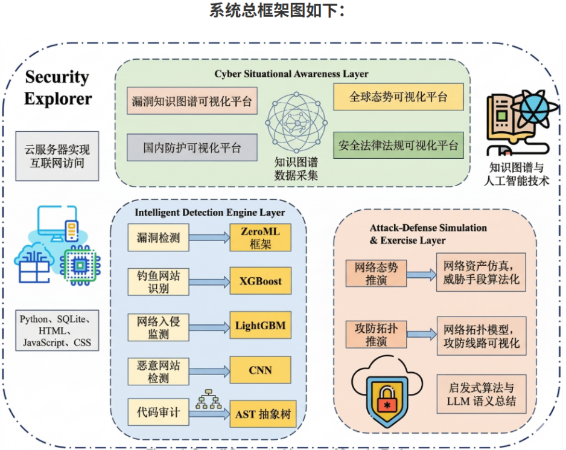
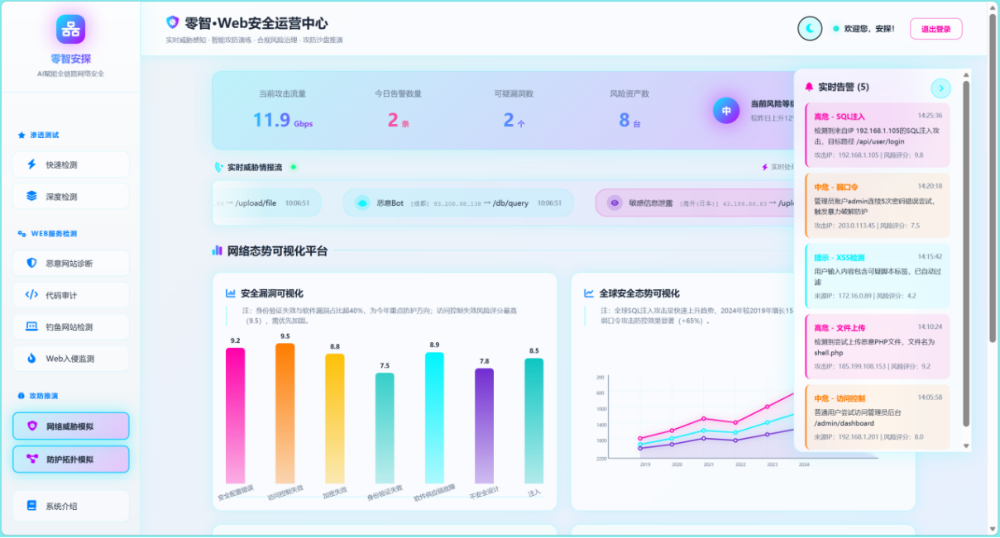

基于深度强化学习的无人机覆盖路径研究
2026.04 - 2027.03
针对传统覆盖算法在复杂环境下缺乏自适应能力的问题，采用 Gymnasium 接口结合 Pygame
渲染搭建仿真环境，构建 18 维连续观测空间，设计覆盖增益、时间效率与碰撞惩罚的多目标奖励函数，
基于近端策略优化（PPO）算法训练模型，实现自适应路径规划与区域覆盖。
Python
Gymnasium
Pygame
PPO
强化学习
主要职责与成果：负责项目申报与立项答辩；基于 Pygame 搭建可视化仿真环境；
构建 PPO 训练框架并完成超参数调优；对比之字形、螺旋型等传统算法，在覆盖效率与稳定性上表现出显著优势。


零智安探：AI 协同的全链安全态势感知系统
2025.04 - 2026.03
针对网络安全漏洞检测误报率高的痛点，团队自研零智框架并通过差分验证实现高精度 Web 漏洞检测；
集成 XGBoost 钓鱼识别、CNN 恶意 URL 检测等多模型；构建网络态势与攻防拓扑双维度推演引擎，
并搭建漏洞知识图谱驱动的四维态势可视化平台。
机器学习
前端开发
知识图谱
主要职责与成果：参与机器学习模型训练；重点负责前端开发，基于 Three.js
等技术搭建 3D 动态态势感知大屏及多类型图表展示平台。项目转化获中国大学生计算机设计大赛
Web 开发赛道江苏省一等奖、国家级二等奖。

